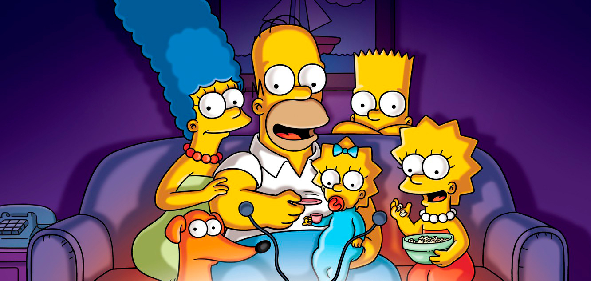
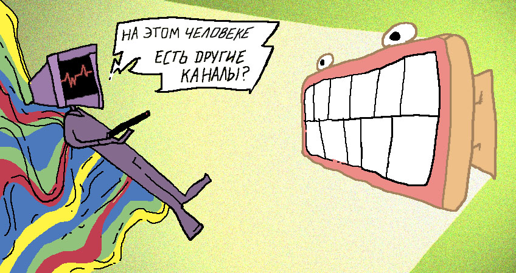
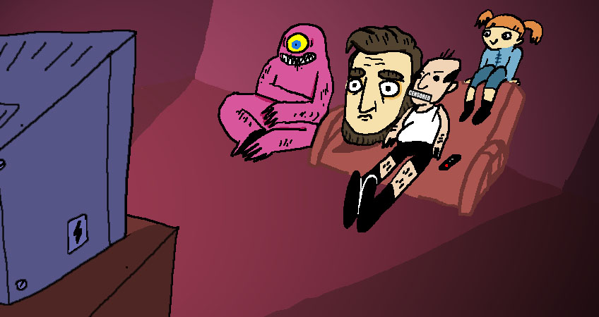
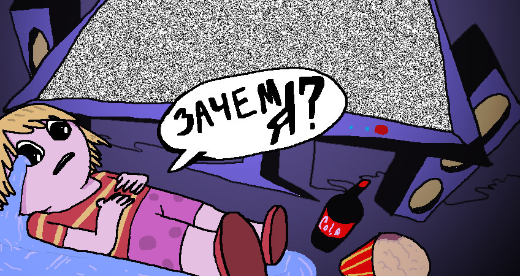

ВСЕМИРНЫЙ ДЕНЬ ТЕЛЕВИДЕНИЯ: ГИД, КАК ПРАВИЛЬНО СМОТРЕТЬ ТЕЛИК
Ровно 24 года назад, по предложению ООН, начали отмечать Всемирный день телевидения, и кажется, это отличный повод задуматься: а правильно ли мы вообще смотрим телевизор? Правильно ли переключаем кнопки, выбираем программы и психуем на рекламах? Может, из-за нашего халатного подхода он отдает первое место интернету?
Составили памятку из вариантов, как правильно смотреть телевизор в 2020 году. Следуйте, пожалуйста, указаниям, и тогда просмотр станет по-настоящему интересным. И хватит переключать рекламу!
— Устройте рекламный марафон: смотрите исключительно рекламу, переключая каналы после каждого ролика.
— Смотрите телик без звука, говоря за героев их реплики, меняя стиль речи и тембр голоса.
— Переключите русский язык на какой-нибудь вообще не известный вам. Пристально всматривайтесь в сюжет, оцените визуал и взращивайте в себе внимание к деталям. Увидьте в мексиканском сериале глубину, а в детском утреннем шоу — пасхалки для взрослых.
— Сядьте перед телевизором, и сделайте так, чтобы телевизор смотрел вас, а не вы его.

— Отдайте пульт кому-то из домашних, попросите спрятать, но оставить чехол из пузырьковой пленки на диване. Сядьте смотреть телик, попробуйте найти пульт, распсихуйтесь, что его нигде нет, и успокойтесь, жмякая на пузырьки. Все же переключить можно и вручную!
— Посадите смотреть батю что-то типа «Дрожащей правды» из блока [adult swim], сами сядьте спиной к телевизору. Попросите рассказывать все, что происходит в телике, и выбирать только цензурную лексику. Наслаждайтесь тишиной.

— Психологическая игра-испытание: сядьте перед телевизором и начните мысленно соглашаться со всем, что видите. Посадите рядом с собой друга, который будет контролировать ваше состояние и выключит адскую машину, когда вы неминуемо станете другим человеком.
— Закройте глаза. Переключайте наугад каналы и попытайтесь угадать, что за передача идет. Лайтовый уровень — попробуйте угадать хотя бы телеканал. Если кто-то говорит голосом Барта — наверняка вы на 2х2. Если слышите Питера Гриффина — то вы не переключили наугад, это снова мы.
— Найдите канал, где показывают только белый шум, и смотрите его минут 20, пока не поймете, зачем вы живете.
